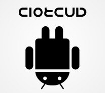

Monday, January the 11th, 2016
back to: title, date or indexes
This post is the latest in our clear-eyed and earth-shattering series What They Don't Want You To Know.
Have you noticed, when handling your Android device, that if you try to turn the screen round to view it upside down, it immediately flips to restore the default view? This was trumpeted as an exciting and “user-friendly” feature of tablet computers from the very first. It is of course nothing of the sort. It is, rather, a blatant example of the capitalist military industrial complex, probably abetted by the Freemasons and the Zionists and the lizard people from outer space, preventing you from realising that the Android is, in reality, a Clotcud—as revealed below.
